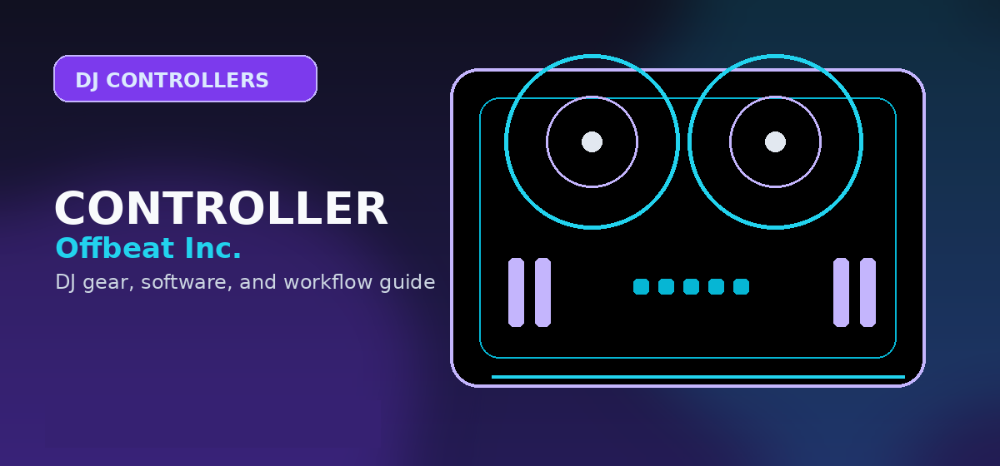

Best DJ Controllers Under $500 in 2026
Best DJ controllers under $500 in 2026 — Pioneer DDJ-FLX6-GT, Denon MC7000, and Rane One compared side-by-side. Expert picks with honest pros, cons, and pricing.

Disclosure: This page uses affiliate links. We may earn a commission at no extra cost to you. Full disclosure →
Pioneer DDJ-FLX6-GT, Denon MC7000, and Rane One side-by-side — which one fits your style?

The $500 bracket is arguably the best value in DJ gear in 2026. You get professional build quality, motorized or high-end jog wheels, 4-channel mixing, and full software integration — at half the price of pro-tier controllers. Whether you're buying your first serious controller or upgrading from something entry-level, this guide cuts through the noise.
We tested the three top contenders: the Pioneer DDJ-FLX6-GT, the Denon MC7000, and the Rane One. Here's what actually matters.
Pioneer DDJ-FLX6-GT: The Versatile All-Rounder
Pioneer's DDJ-FLX6-GT is the most versatile controller in this price range, offering Serato DJ Pro and Rekordbox compatibility, 4-channel mixing, motorized jog wheels, and RGB performance pads. If you're unsure which software ecosystem you'll stick with, this is your failsafe.
- 4-channel mixer with dedicated controls and 3-band EQ + kill switches
- Motorized 6-inch jog wheels with center displays (BPM, beat grid, track position)
- 8 RGB performance pads per deck (Hot Cue, Loop, Sampler, Slicer modes)
- Built-in FX — 8 dedicated knobs for Echo, Reverb, Trans, Filter
- 24-bit/48kHz USB audio interface built-in
- Replaceable, adjustable crossfader
- Compatible with: Serato DJ Lite/Pro + Rekordbox
- Weight: 8.8 lbs (4.0 kg)
Drawbacks: Serato DJ Lite included (Pro upgrade required for full features). Crossfader could be smoother for ultra-fast cuts at this price point.
Search Pioneer DDJ-FLX6-GT controller on Amazon →Denon MC7000: The Battle-Tested Workhorse
The Denon MC7000 is built for professionals who need gear that won't fail on stage. Its killer differentiator: balanced XLR outputs — extremely rare below $500 — letting you connect directly to professional PA systems without adapters. Includes Serato DJ Pro out of the box.
- 4-channel mixer with 3-band EQ + kill switches
- Large responsive jog wheels with center displays
- 8 RGB performance pads per deck (Hot Cue, Loop, Roll, Slicer)
- Balanced XLR outputs for direct PA connection
- 24-bit/48kHz USB audio interface built-in
- Rugged metal chassis — built to survive touring
- Replaceable, adjustable crossfader
- Includes Serato DJ Pro license (full, not Lite)
- Weight: 12.1 lbs (5.5 kg)
Drawbacks: Heavier than competitors — less ideal for backpack-mobile DJs. Serato-only (no Rekordbox). Some users find the layout slightly dated vs newer controllers.
Search Denon MC7000 DJ controller on Amazon →Rane One: The Scratching Specialist
If scratching is central to your style, the Rane One doesn't have competition at this price. Its Mag Four magnetic jog wheels offer ultra-low latency and precise tracking optimized for complex scratch techniques — a feature you normally only find on $800+ gear.
- 2-channel mixer (focused layout for performance DJs)
- Mag Four magnetic jog wheels — low latency, high precision for scratching
- 8 RGB performance pads per deck (Hot Cue, Loop, Roll, Slicer)
- Replaceable, adjustable crossfader — critical for turntablists
- 24-bit/48kHz USB audio interface built-in
- Metal construction + durable build from Rane's pro heritage
- Includes Serato DJ Pro license (full)
- Weight: 11.0 lbs (5.0 kg)
Drawbacks: 2-channel only — not ideal for complex multi-deck mixing. Serato-only. Less versatile than 4-channel options if scratch performance isn't your main focus.
Shop Pioneer DJ DDJ-FLX6-GT controller on Amazon →Side-by-Side Comparison
| Feature | Pioneer DDJ-FLX6-GT | Denon MC7000 | Rane One |
|---|---|---|---|
| Channels | 4 | 4 | 2 |
| Jog Wheel Type | Motorized 6" | Large responsive | Mag Four magnetic |
| Performance Pads | 8 per deck (RGB) | 8 per deck (RGB) | 8 per deck (RGB) |
| XLR Outputs | No | Yes ✓ | No |
| Software Included | Serato Lite + Rekordbox | Serato DJ Pro ✓ | Serato DJ Pro ✓ |
| Multi-platform | Yes (Serato + RB) | Serato only | Serato only |
| Scratch Optimized | No | Moderate | Yes (Mag Four) |
| EQ Kill Switches | Yes | Yes | Yes |
| Weight | 8.8 lbs | 12.1 lbs | 11.0 lbs |
| Replaceable Crossfader | Yes | Yes | Yes |
Quick Verdict
- Best Overall / Most Versatile: Pioneer DDJ-FLX6-GT — supports Serato and Rekordbox, lightest of the three, motorized jogs that feel premium.
- Best for Gigging / Professional Use: Denon MC7000 — XLR outputs, full Serato DJ Pro included, built like a tank for touring.
- Best for Scratching / Turntablism: Rane One — Mag Four magnetic jog wheels give you scratch-optimized performance you can't get elsewhere at this price.
At the $500 mark, all three controllers are serious tools. The decision comes down to: Are you gigging and need XLR outputs? (Denon MC7000.) Do you scratch and need ultra-responsive jogs? (Rane One.) Do you want flexibility across software platforms and a lighter build? (Pioneer FLX6-GT.)
Bottom line: The Pioneer DDJ-FLX6-GT is the safest all-round controller to price-check in this bracket, but used and bundle pricing can move fast. Gigging DJs should verify balanced outputs before choosing the Denon MC7000, while scratch-focused buyers should compare the Rane path against motorized controller options before spending more. Check current DDJ-FLX6-GT prices on Amazon →
Shop on Amazon
Browse DJ controllers under $500 — filter by price, verified ratings, and Prime eligibility.
Also Available on zZounds
Compare DJ controllers across retailers — interest-free payment plans available.
Reloop Beatmix 4: The 4-Channel Budget Powerhouse
If you are looking for true 4-channel control without breaking the bank, the Reloop Beatmix 4 remains a staple in the sub-$500 market. It offers a dedicated layout for Serato that prioritizes tactile feedback, featuring large, low-latency jog wheels and a performance pad section that feels intuitive for live remixing. While it lacks some of the advanced hardware effects found on more expensive units, its solid build quality and straightforward mapping make it an excellent choice for bedroom DJs looking to transition into multi-deck mixing.
Hercules DJControl Inpulse 500: The Best for Beginners
The Hercules Inpulse 500 is arguably the best-value entry point for new DJs. It stands out by including "Beatmatch Guide" light indicators that help beginners learn manual beatmatching without relying solely on the software sync button. It features a sturdy metal backing plate, a high-quality audio interface, and a well-spaced layout that mimics professional club gear. For those starting their journey in 2026, this controller provides the most educational utility per dollar spent.
Software Pairing for Best DJ Controllers Under $500 (2026)
Choosing the right controller is only half the battle; ensuring it plays nice with your preferred software is equally critical. In 2026, the landscape is dominated by three main players:
- Serato DJ Pro/Lite: The industry standard for hip-hop and open-format DJs. Controllers like the Rane One and Reloop Beatmix 4 are optimized specifically for Serato's low-latency engine.
- Rekordbox: The native ecosystem for Pioneer gear. If you plan on eventually playing in clubs using USB sticks, learning the Pioneer workflow on the DDJ-FLX6-GT is your best long-term investment.
- DJUCED/VirtualDJ: Often bundled with Hercules units, these are excellent for beginners who want highly visual interfaces and easy-to-use stem-separation features that don't require high-end computer specs.
Buying advice and compatibility checks
Use this section to sanity-check the DJ controller under $500 against your actual setup before comparing prices.
Best fit
DJs who want a serious beginner-to-intermediate controller with enough controls to avoid an immediate upgrade.
Skip if
Buyers who need standalone USB playback, pro booth outputs, or four-channel mixing right away.
Compatibility checks
Verify Serato/rekordbox/djay support, mobile support, and whether the controller unlocks the full app or only a limited version.
2026 update
The strongest under-$500 choices now depend more on ecosystem and software unlocks than raw knob count.
Price caveat
Prices fluctuate around bundles. Compare controller-only listings against bundles that include cases, headphones, or software licenses.
Recommendation logic
Choose the controller that matches the next year of practice and gigs, not the one with the flashiest spec sheet.
| Buying check | What to verify | Why it matters |
|---|---|---|
| Setup fit | Inputs, outputs, operating system, software tier, and accessories | Prevents buying gear that looks right but fails in the actual rig. |
| Upgrade path | Whether the product still makes sense after six to twelve months | Reduces duplicate purchases and rushed upgrades. |
| Total cost | Required cables, cases, subscriptions, replacement parts, and backups | The lowest listing price is often not the true working setup cost. |
Official spec and support links
Check current specs, supported software, firmware, and accessory requirements at the source before buying.
Frequently Asked Questions
What is the best DJ controller under $500 in 2026?
The Pioneer DDJ-FLX6-GT is the top overall pick under $500. It offers 4-channel mixing, motorized jog wheels, 8 RGB performance pads per deck, and works with both Serato DJ Pro and Rekordbox — the most flexible option at this price point.
Is the Denon MC7000 worth buying in 2026?
Yes — especially for gigging DJs. The MC7000's balanced XLR outputs let you connect directly to professional PA systems without adapters, which is rare below $500. It ships with a full Serato DJ Pro license and has a metal build designed for touring.
What makes the Rane One different from other $500 controllers?
The Rane One uses Mag Four magnetic jog wheels — a technology normally found on $800+ gear. They deliver ultra-low latency and precise tracking specifically designed for scratching and turntablist techniques. If your style is performance-heavy and scratch-focused, nothing else at this price point competes.
Do DJ controllers under $500 come with software?
All three top picks include software. The Pioneer DDJ-FLX6-GT includes Serato DJ Lite (upgradeable) and Rekordbox. The Denon MC7000 and Rane One both include full Serato DJ Pro licenses — no upgrade purchase required.
Can I DJ professionally with a $500 controller?
Yes. The Denon MC7000 with XLR outputs is used by working mobile and event DJs regularly. Most club residencies provide venue CDJ rigs, so a reliable $500 controller handles practice and mobile gigs without compromise. Upgrade to a standalone media player setup only when you're booking residencies requiring specific gear.